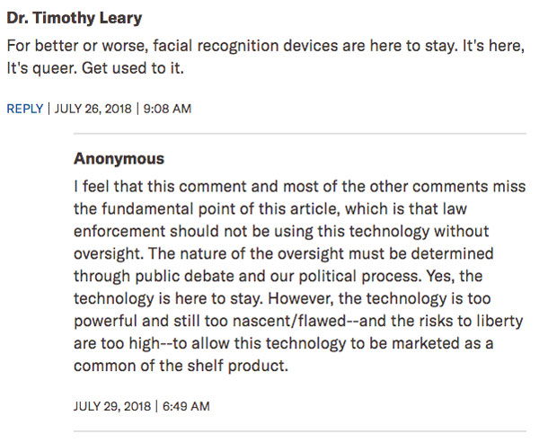
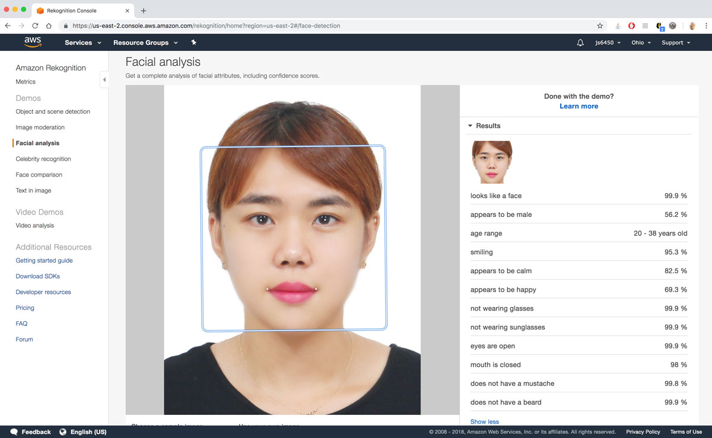
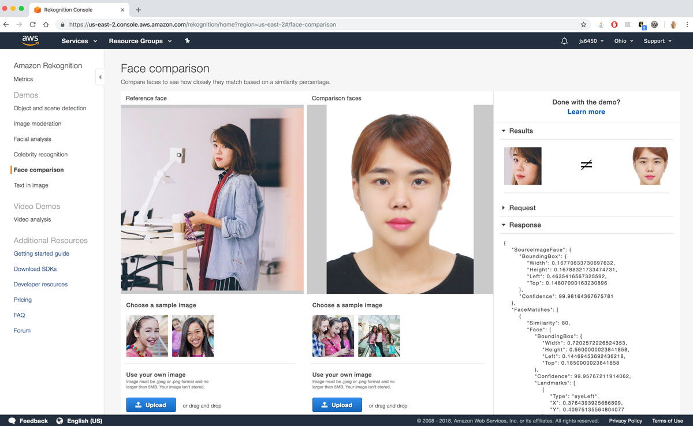

Week 6: Biases in Facial Recognition
Oct 17, 2018
The bias in facial recognition is quite well known as an example of bias in machine learning, but it seems that it still remains as a problem. A recent article by American Civil Liberties Union talks about their research on Amazon's facial recognition tool called Rekognition. What they did is interesting - they took photos of the members of the congress and compared them with photos of the people who have been arrested for a crime. What they found was nothing that I couldn't believe. Rekognition had an error rate of 5.23%, with 28 members (out of 535 in total) falsely matched with a mugshot. Out of the 28 members who were falsely matched, 39% of them were a person of color. Again, this is not a surprise. Facial recognition softwares, tools and algorithms have been infamously accurate for white men, while being completely the opposite for women of color. The most horrific part of this whole research was the comment that I saw on the ACLU website, captured below:
The ACLU website allows their users to anonymously comment, without any sort of a log in, but this user, who identified themself as Dr. Timothy Leary, left a short commment saying that we needed to "get used to it". Thankfully, an anonymous user expressed what I would want to say to him, in a more clear and eloquent way. The point is not whether facial recognition should disappear completely. It is about how it needs to be improved - with more balanced training data sets probably - BEFORE it is applied to be used in so many spectrums of everyday life. Amazon has been promoting their tool Rekognition to be applicable "everywhere". It is true that facial recognition could be applicable in a lot of senarios, but would need it to be "perfected" by being more balanced out before it becomes too wide spread.
I decided that I wanted to try out rekognition myself. This was my first time signing up for a personal aws account, which I have to say, took more time than I thought it would to set up. It had to go through a number of verification processes, such as phone , credit card and email verification, then it took a good hour for all of my verificiations to be verified. And without having your account verified, you can't demo any of Amazon's open tools, one of which is rekognition. Eventually I was able to have a verified account, and I just tried two simple things through their online demos. First I uploaded my "official" head shot that I use for VISAs, and it identified me as 56.2% male. I have been told by friends that this photo makes me look like a boy, and I guess it has been proved by the software that I indeed do.
Next, i compared the above head shot with a normal photo of using the face comparison demo, and unsurprisingly, it falsely mismatched my two photos. This actually gave me hope in thinking that all I need to seem like two different people was whether my hair was tied up or not.
Apart from ACLU's research, there are a number of researches out their about the bias of facial recognition. Another one of which that I like is Joy Buolamwini's research on other facial recognition tools created by companies such as IBM, Microsoft, and Face++. Joy's research is a little more generalized and conclusive in the facial recognition tools that she uses to prove that there indeed is a bias against women of color in facial recognition.